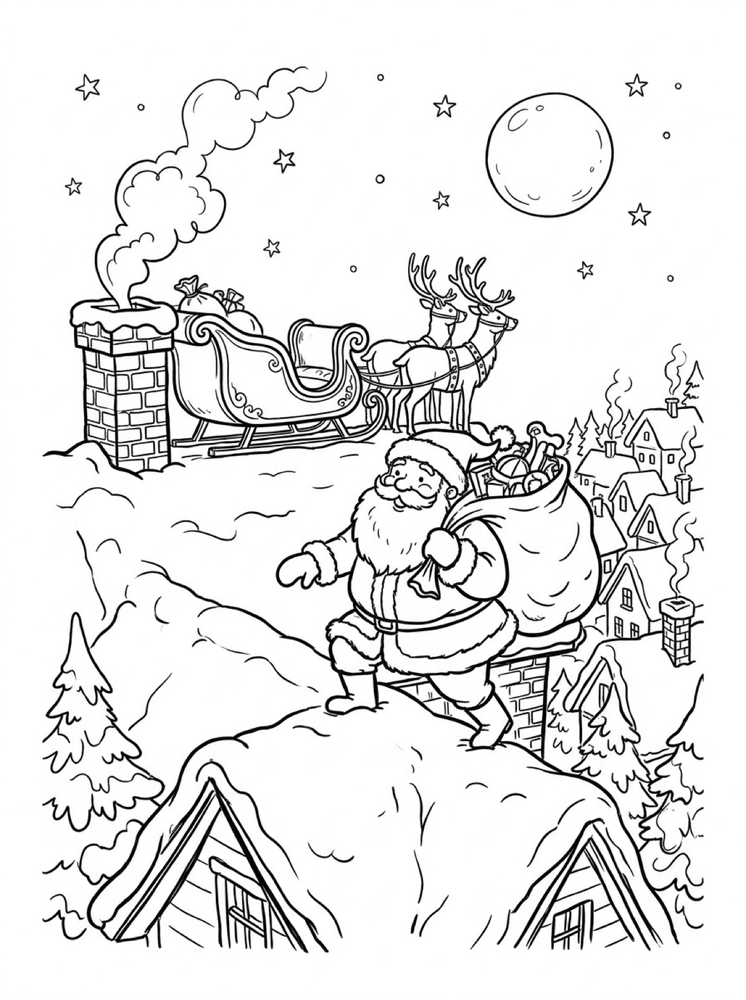
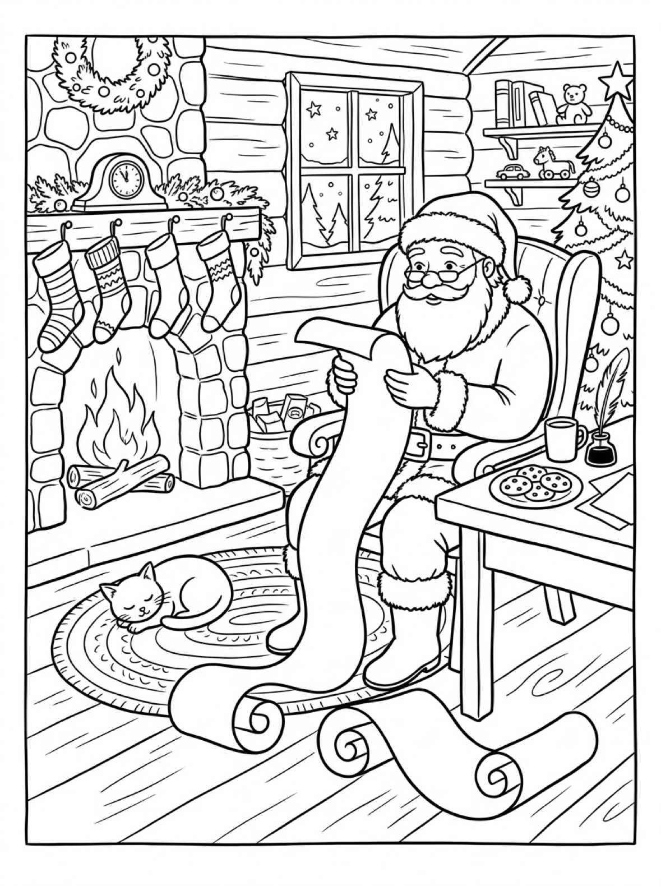

Free Santa Coloring Pages Workshop, Rooftop & Christmas List Printables
These free santa coloring pages give your child three storybook Santa scenes to color — Santa painting toys in his workshop, Santa crossing a snowy rooftop on Christmas Eve, and Santa reading his long list by the fire. Download the set below, print at home on letter-size paper, and let the coloring fun begin. No signup needed.
Last updated: October 21, 2026
Quick Answer
Yes — this page has three free printable santa coloring pages: Santa painting a toy train in his workshop, Santa carrying his toy sack across a snowy rooftop under the full moon, and Santa reading his Christmas list in an armchair by the fireplace. Bold outlines and big spaces, made for little hands. Download, print on letter-size paper, and hand over the crayons — no signup, no cost.
At a Glance
- Ages: 3–8
- Pages: 3 free printables
- Format: Print at home, letter size
- Cost: Free, no signup
- Supplies: Crayons or markers
- Time: 10–20 minutes
🎅 Santa's Workshop Coloring Page

🎨 Download Your Free Santa's Workshop Coloring Page
Santa in his apron, brush in hand, painting a toy train at his workbench — shelves of rocking horses, drums and teddy bears behind him and a sack of wrapped presents at his feet.
⬇️ Download Free Workshop Page 🖨️ Print Workshop Page🎁 Free printable for preschoolers & kids
🎅 Santa on the Rooftop Coloring Page

🎨 Download Your Free Rooftop Santa Coloring Page
Santa tiptoeing across a snowy rooftop with his toy sack over his shoulder — the sleigh and two reindeer waiting by the chimney, the full moon overhead and the whole village asleep below.
⬇️ Download Free Rooftop Page 🖨️ Print Rooftop Page🎁 Free printable for preschoolers & kids
🎅 Santa Reading His List Coloring Page

🎨 Download Your Free Santa's List Coloring Page
Santa settled into his armchair, the long list unrolling to the floor — a fire in the stone fireplace, stockings on the mantel, a cat asleep on the rug and cookies waiting on the table.
⬇️ Download Free List Page 🖨️ Print List Page🎁 Free printable for preschoolers & kids
More Coloring Pages
Tap any picture to open its theme page and download the free printable.


🎅 How To Use This Page
- Browse the three scenes and pick the Santa moment your child will love most.
- Tap download or print under that design — the file opens full-size, ready for letter-size paper.
- Print a couple of copies so your child can color Santa's suit classic red one day and rainbow the next.
- Color together with crayons or markers, then hang the finished page where Santa is sure to see it.
🎅 Why Kids Love Santa Coloring Pages
No visitor is more eagerly awaited all year than Santa, and coloring his world is a way for kids to step inside the story while they wait. These Santa Claus coloring pages show the three moments children imagine most: Santa making the toys, Santa setting out across the rooftops, and Santa checking the famous list by the fire. Every scene is full of decisions a child gets to make — the color of the wrapping paper, the pattern on the stockings, the shade of the night sky.
That freedom makes Santa pages endlessly repeatable through December. Print the same design twice and it never comes out the same: the workshop can glow warm and golden while the rooftop stays deep blue and quiet. Kids practice grip, pressure and color planning while they work, and a finished Santa on the fridge builds the Christmas excitement a little more every day.
🎄 Meet the Three Santa Scenes on This Page
Santa in his workshop. Santa stands at his workbench in a work apron, brush in hand, painting the last details on a little wooden toy train. Paint pots, a hammer and tools sit on the bench beside him, and the shelves behind are stacked with finished toys — two rocking horses, a doll, drums, teddy bears and toy sailboats. Stockings hang on the wall, holly trims the window where snow falls over the village rooftops, and a huge sack of wrapped presents waits at his feet with a teddy bear peeking out of the top.
Santa on the rooftop. It is Christmas Eve, and Santa is crossing a snowy rooftop with his toy sack slung over his shoulder, one foot on each side of the ridge. Behind him the sleigh waits beside a smoking chimney, two reindeer standing patiently in their harnesses, while the full moon and stars light the way. Far below, the village sleeps — rows of little houses with smoke curling from their chimneys and snow-heavy pine trees between them. The big moon, the open sky and the wide snowy roofs make this the boldest, simplest scene in the set.
Santa reading his list. Back home, Santa has settled into his armchair with the long list unrolling all the way down to the floor and curling across the rug. A fire burns in the stone fireplace, four patterned stockings hang from the mantel under the clock and the wreath, and a cat sleeps curled up on the round rug. On the table beside him sit a plate of cookies and a warm drink, and the Christmas tree waits at the edge of the picture, ready for its ornaments to be colored in.
✏️ Santa Coloring Tips
- Start with the suit. Red is the classic choice, and it pops beautifully against the white beard and snow — but there is no rule that says Santa can’t wear green, blue or purple in your child's version.
- Make the beard and snow different. Leave the beard white and shade the snow pale blue or gray, or the other way around, so Santa stays easy to spot in the rooftop scene.
- Go dark on the rooftop. That scene rewards deep blues and purples in the sky, with a big golden moon and yellow stars shining out of the dark.
- Count the toys. On the workshop page, count the presents in the sack and the toys on the shelves as your child colors them — a quiet counting game hidden inside the picture.
- Leave one out for Santa. A finished page next to the cookies on Christmas Eve makes a sweet surprise for whoever eats them.
🎅 Coloring Pages for Different Ages
For ages 3 to 4, start on the rooftop. Santa is one big central figure, and the moon, the sack, the sleigh and the snowy roof are all wide, bold shapes that little hands can fill without worrying about small details. Scribbling is fine at this age — they are learning how crayons move and how hard to press.
For ages 5 to 6, the workshop is the sweet spot. Santa is still big and friendly, but now there are shelves of toys to discover and color one by one — a drum here, a rocking horse there — plus stockings and presents to plan colors for.
For ages 7 to 8, hand over the list by the fire. It carries the most detail — the stones of the fireplace, the patterns on the stockings, the tree ornaments, the cookies on the plate — and rewards patience and careful coloring. Older kids often spend the longest on this cozy one.
🎄 More Christmas Fun After Coloring
After coloring, ask your child which moment they would most like to see for real. Would they peek into the workshop, ride across the rooftops, or curl up like the cat by Santa's fire? Write their answer on the back of the page (or let them dictate while you write) and the sheet becomes a keepsake instead of a throwaway. The workshop page also makes a natural wish-list starter: which of the toys on those shelves would your child ask Santa for?
If Santa has started a whole Christmas coloring streak, the Christmas bundle is a separate, bigger set of Christmas printables — a whole extra pack of festive pages and activities beyond these three Santa designs, ready to download in one go.
🔗 More Free Printables You’ll Love
- Free Christmas Printable Bundle A separate, bigger set of Christmas printables — festive coloring pages and activities in one download.
- Free Winter Coloring Pages A snowman in the forest, kids sledding to a log cabin, and a skater on a frozen pond.
- Free Dog Coloring Pages A sheepdog in the garden, a puppy in the autumn leaves, and a Dalmatian on the farm.
- All Free Coloring Pages Browse every free coloring page on the site, organized by theme.
❓ Santa Coloring Pages FAQ
Are these santa coloring pages really free?
Yes — all three designs on this page are free original printables from MomYouNeedThis. Download them, print them at home, and color — no signup and no cost.
What ages are these coloring pages best for?
Kids ages 3 to 8 get the most from this set. Younger children can start on the rooftop scene, with its big moon and wide snowy shapes, while older kids enjoy the detail in the workshop shelves and the fireplace scene.
How do I print a coloring page?
Tap the download button under the design you want, then print the file on regular letter-size paper. The print button opens the full-size page in a new tab if you prefer to print from there.
Which of these santa coloring pages is easiest for toddlers?
The rooftop design. Santa, his sack, the sleigh and the full moon are all big, bold shapes, and the snowy roof is one wide space to fill — a perfect first Santa page for little hands.
Can I make a coloring book from these pages?
Yes — print all three designs, stack them in order, and staple along the left edge. Add a cover sheet with your child's name on it for a finished homemade Santa coloring book.